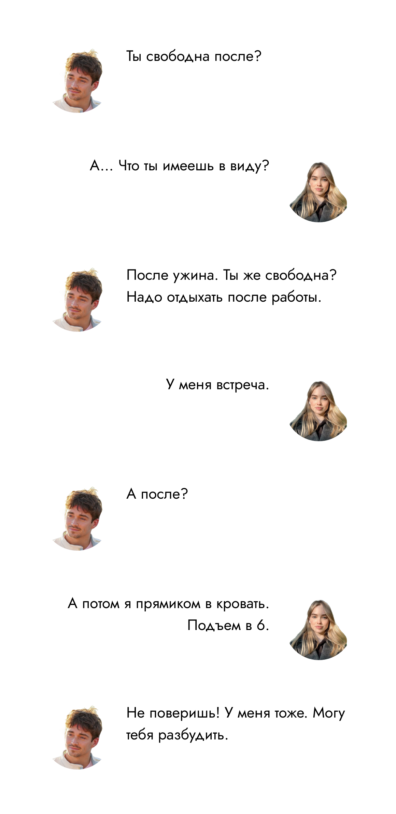
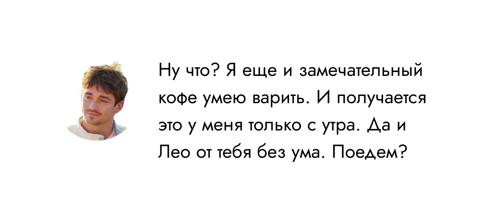
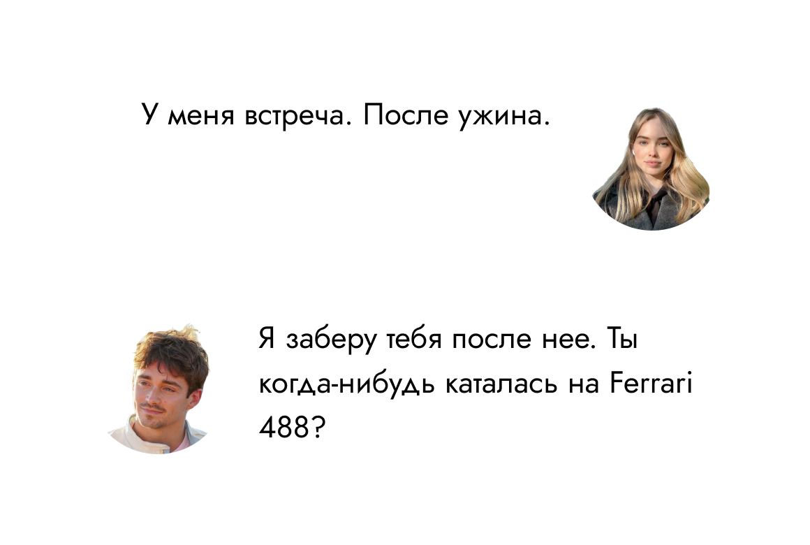

Собиралась впопыхах. Официальный ужин команды Феррари... Сказал бы тебе кто-то буквально неделю назад, что ты будешь тут, ты бы точно рассмеялась.
Каблуки не жмут, платье не задирается и сидит отлично. Как же плавно все идет. Вот бы и ужин прошел также... Но не тут-то было. Люди, люди, люди, но нельзя было не заметить... Шарль. Костюм с иголочки, глубокий черный, верхняя пуговица рубашки расстегнута, на загорелых ключицах едва заметно блестит цепочка. Как у Ландо сегодня... Ландо.
Один бокал шампанского сможет вернуть мысли в нужное русло, да? Только один. Все-таки на работе!
Улыбка сама напрашивается. Он улыбается в ответ.
Все понятно. Все очевидно. Шарль — тот еще ловелас! Но этот голос, улыбка, глаза... В коленках дрожь, лицо горит, будто это была не половина бокала игристого, а три бутылки—
Встреча. С. Софи.
 Отказаться. Согласиться.